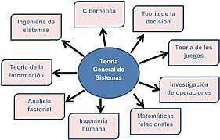

Lectura 2 - Teoría general de Sistemas
En el presente documento expone, define e informa los conceptos generales y básicos de la teoría general de Sistemas.

Recuperado de https://www.timetoast.com/timelines/teoria-general-de-sistemas-68ad9779-9989-46d3-9c69-9ed495d690a4
Lectura 4 - Gestión de conocimiento Organizacional
El presente documento demuestra, informa, comunica y explica la gestión del conocimiento organizacional en plataformas virtuales.
Recuperado de https://blogs.elespectador.com/economia/el-mal-economista/sociedad-del-conocimiento